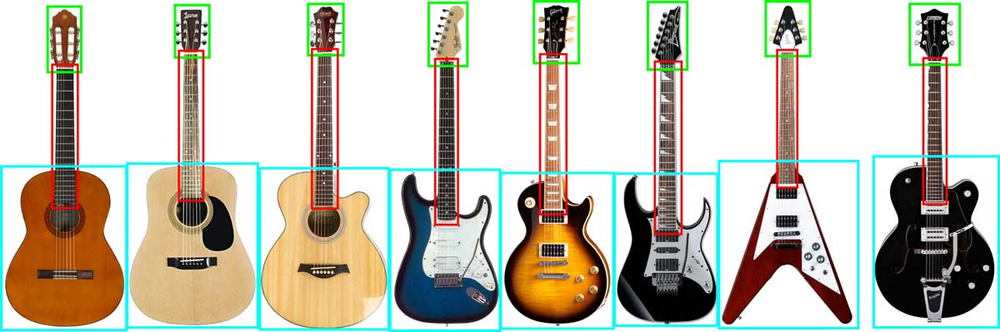
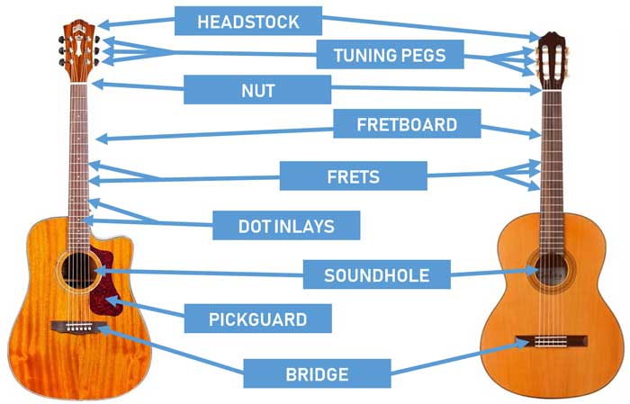

Lesson 1 - The Parts of the Guitar
Learning the parts of the guitar for both acoustic and electric guitars is important for every guitarist. If you go to a store looking at buying a guitar, you’re going to hear a lot of part names. If you don’t know what some of those part names are, it will be hard for you to pick the right guitar for your needs.
In this lesson you will learn all the important guitar part names, what they look like, what they do, and different variations for each part. By the end of this lesson, you will be able to talk to any guitarist and fully understand any guitar parts they mention.
Main Parts of the Guitar
The diagram below shows the main parts for a range of both acoustic and electric guitars

While all of the above guitars have different parts, design, and features, the main parts are the same. All of the above guitars have three main parts:
- The head of the guitar shown in green
- The neck of the guitar shown in red
- The body of the guitar shown in blue
As you can see, there’s a lot of differences between the above guitars. While all have a head, neck, and body, the shape, features, and design are all different across the guitars. We will dig deeper into each part later on. The main point to remember is that all guitars start out with these main parts.
Acoustic Guitar Parts Diagram
The diagram below shows two different acoustic guitars with the parts labeled. The guitar on the left is a steel string acoustic and the guitar of the right is a nylon string acoustic. Most of the guitars we have here at Middleton Grange School are nylon string acoustics

While the two types of acoustic guitars are very different in how they sound and play, many of the parts are similar. In the above diagram, the shape of the body is different. The steel-string acoustic has a cutaway to give better access to the upper frets. The steel-string acoustic has dot inlays on the fingerboard (also called fretboard) to mark out important fret positions. While the nylon string acoustic doesn’t have dot inlays, it does have markers on the side of the neck which is only visible from the guitarist’s view. Most guitars have a combination of markers on the side of the neck and on the fretboard.
Lesson thoughts:
On the next page we will look at these parts in more detail.
Click the right arrow below to go to the next section.
Page design Copyright L. Noble 2021